把水印从视频里拿掉，
而不是贴一层马赛克
七个 Agent 串成一条流水线：多帧投票找出固定水印，按半透明叠加整框生成遮罩， 邻近真实块移植 + 纹理回填完成修复；质检不达标就带着新参数回灌遮罩，重跑到通过为止。 全程本地 OpenCV + ffmpeg，视频不上传。
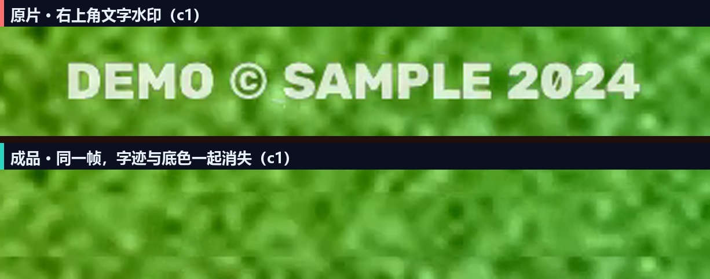
本工具仅用于处理你本人拥有版权、或已取得权利人明确授权的视频素材，例如清理自己作品的台标与导出残留。 禁止用它去除他人作品的水印、台标、版权标识或平台标识 —— 这可能侵犯著作权、违反平台规则并承担法律责任。 页面上的演示视频为程序合成的示例素材，不含任何第三方内容。
回放一次真实运行 · 98 条事件 · 129.5 秒
视频、日志、评分、产物全部来自本地 8231 服务在 2026-11-11 的真实运行（run pagedemo01）。
页面只按原始时间轴重放这些事件，不做任何美化或补写。
检测结果 · 2 个区域
48 帧多帧投票，出现率阈值 0.70；工作分辨率 960×540（缩放 0.75）。
| 区域 | bbox（原分辨率） | 类型 | 出现率 | 置信度 |
|---|
遮罩 · 半透明叠加判定
框内时间方差 / 邻域环形方差 < 0.85 判定为半透明叠加层，直接整框覆盖，避免只盖笔画留下淡影。
| 区域 | 衰减比 | 遮罩 bbox | 覆盖 | 策略 |
|---|
为什么这页只能看回放GitHub Pages 是静态托管
它只发送 HTML/JS/图片，不执行 Python，也跑不了 OpenCV 与 ffmpeg。真正的处理在你自己的机器上完成。
① 本地运行（推荐）
双击 start.bat，浏览器打开 127.0.0.1:8231。
全部计算在本机，视频不出硬盘，没有上传带宽与排队。
② 内网穿透
想用手机或外网访问，把本地端口挂到临时域名即可：
cloudflared tunnel --url http://127.0.0.1:8231。
服务仍是你的机器在算。
③ 云服务器
有常驻需求时，把 runtime/ 与项目一起放到有 Python 3.13 的机器上，
用 start.bat 或进程守护跑 backend/main.py 即可。
架构6 层 DAG · 7 个 Agent · 1 条回灌边
Agent 只实现 run(payload) -> payload，彼此不 import；编排、事件、超时由 orchestrator 统一负责。
六个不显然的工程决定每一个都由失败实验换来的
下面这些不是"为了显得高级"，而是把水印去干净必须跨过的坑。
01用中位帧边缘当种子
直接对多帧投票图取 support ≥ 0.7 会得到 133 个连通域：运动残影、周期性纹理都会被投票堆起来。
改成「中位帧 Canny ∩ 投票」后同一段素材稳定出 2 个真实水印框，出现率仍按种子像素统计。
02半透明叠加要整框盖
只盖笔画会在原处留下淡白残影：半透明层会把整块区域的时间方差压低。 用「框内时间方差 / 邻域方差」当衰减指标，< 0.85 就判定为叠加层，整框覆盖并额外膨胀。
03邻近真实块移植
cv2.inpaint 只会扩散颜色，纹理必然丢：修复区方差掉到邻域的 1/3，边缘密度接近 0，看起来像一块磨皮斑。 改为在 8 个方向上找边缘统计最接近的源块，做均值对齐后羽化贴回。
04纹理回填要按需补
移植后高频仍可能不足，用环带高频方差反解增益：
var_base + s²·var_field = var_ring，只补差额、设上限，避免把画面补成噪点。
05判据换成高频纹理方差
整块方差被背景渐变与运动物体主导，同一帧能差 3 倍。高频分量方差才反映"修复区有没有纹理"； 再用 5 帧中位数 + 帧通过率聚合，避免一帧被遮挡就判死。
06增量只在回灌时启用
第 1 轮只跑任务书 baseline（纯 inpaint，快）；判不达标才上移植 + 回填。 既省时，也让「不达标 → 重生成 → 达标」这条链路在日志里真实可见。
回灌参数梯度（节选）
| 轮次 | method / radius | blur_mix | feather σ | dilate | ink | patch / texture | 结果 |
|---|---|---|---|---|---|---|---|
| 尝试 1 | telea / 5 | 0.00 | 7 | 2 | 0.50 | 关 / 关 | 47.12 不达标 |
| 尝试 2 | ns / 8 | 0.25 | 9 | 4 | 0.45 | 开 / 开 | 76.70 通过 |
| 逐区域覆盖 | telea / 4 | 0.00 | — | 0 | 0.60 | — | over_smooth 区域 |
这一跑的数字全部可在报告里复查
没有手写的美化数字：分数、耗时、产物清单都来自 review_report.json 与 run_log.json。
四维得分
工程化约束
- 19 项自动测试：17 项契约（SSE 格式、JSON 平衡括号解析、Agent 不互相 import、DAG 层数、端口区间、.bat 编码…）+ 2 项端到端（落盘 + 质检通过）。
- 超时与降级：LLM 90s、ffprobe 60s、ffmpeg 编码 180s、示例生成 120s，全部有超时；没有 Key 时三个 LLM 触点规则化降级。
- 本地产物：
outputs/<run_id>/clean.mp4+detect_report.json+review_report.json，每轮中间视频单独留档。
关键帧与中间产物
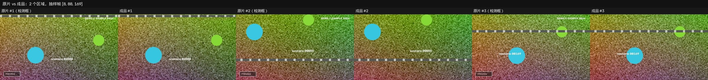
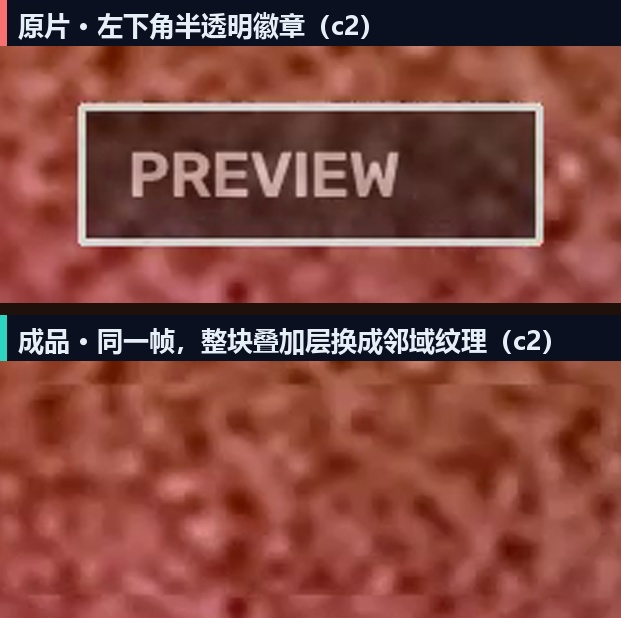
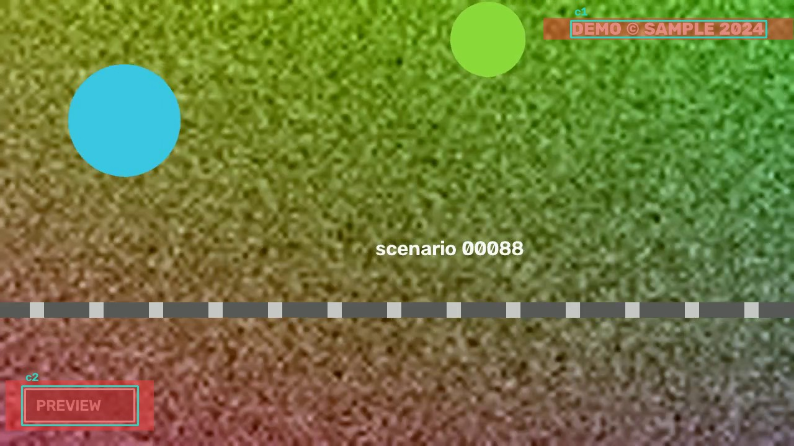
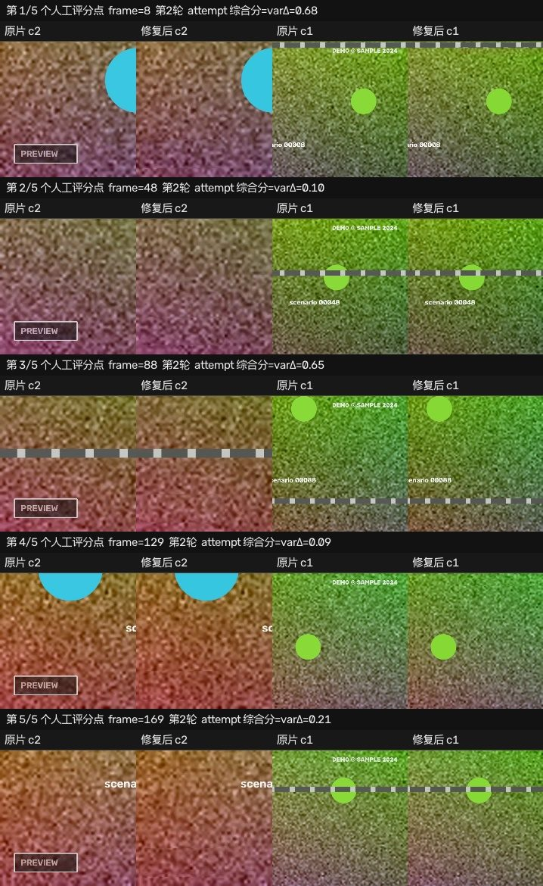
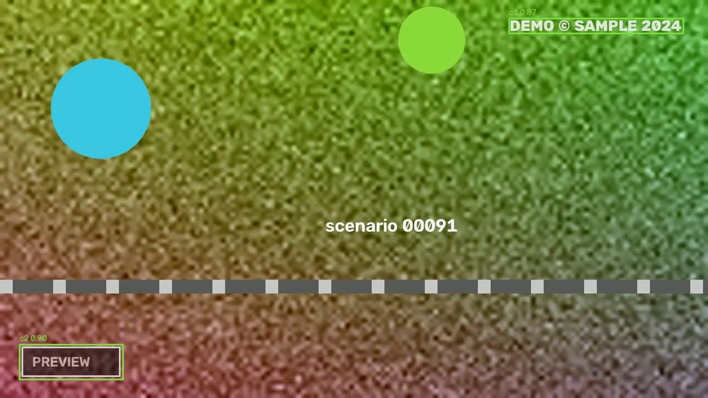
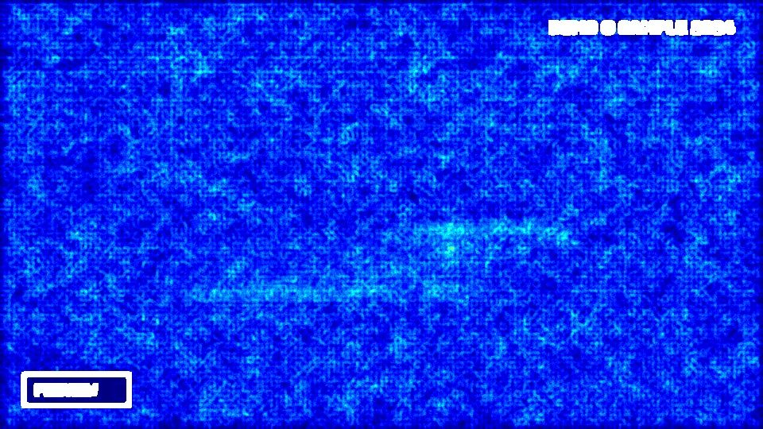
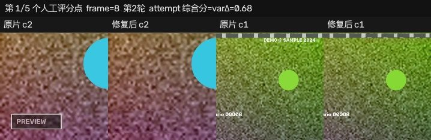
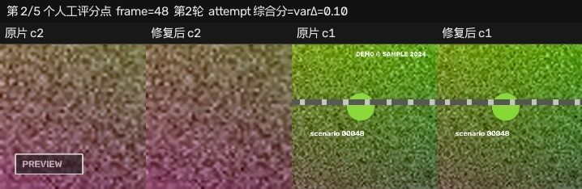
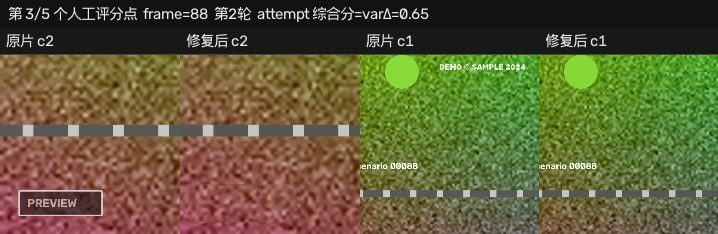
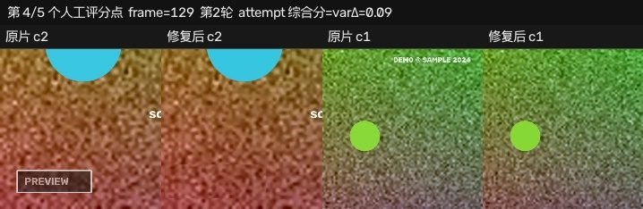
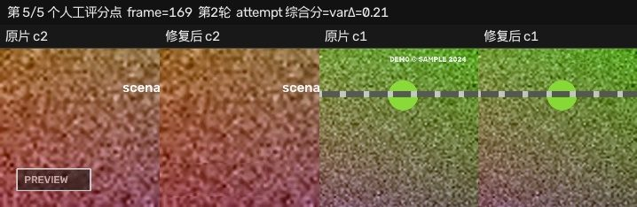
在自己电脑上跑Python 3.13 + OpenCV + ffmpeg
整个项目不带 venv、不联网推理：runtime 目录里就是解释器与 ffmpeg，双击即用。
三步启动
拿到源码与 runtime（解释器 + ffmpeg）后，目录结构：
video_dewatermark/ start.bat stop.bat run_tests.bat backend/ main.py agents/ data/ tests/ runtime/ python/python.exe ffmpeg/ffmpeg.exe ffmpeg/ffprobe.exe
双击 start.bat：检查端口 8231 → 后台起服务 → 探活 → 自动开浏览器。
:: 也可以命令行启动 start.bat :: 停止 stop.bat
页面里勾选授权声明 → 选视频（上传 / 服务器路径 / 内置示例）→ 调参数 → 开始。右侧 SSE 日志实时滚动。
可选：接上大模型
默认规则模式即可完成全部处理。想启用"参数建议 / 人眼评语"，在 backend/.env 填 Key 后重启：
# backend/.env DEEPSEEK_API_KEY=sk-... DEEPSEEK_MODEL=deepseek-chat LLM_TIMEOUT=90
三个 LLM 触点都只做"在允许集合里选参数 / 写评语"，且带超时与失败降级； 输出必须过平衡括号解析与白名单校验，越界即回落规则值。模型不接触像素。
API
| GET /api/health | 服务 / ffmpeg / LLM 状态 |
| GET /api/dag | 层、节点、回灌边 |
| GET /api/events?run_id= | SSE 事件流（先订阅再提交） |
| POST /api/generate | 提交任务（authorized 必须为 true） |
| GET /api/runs/{id} | 结果、报告、产物 |
| GET /api/runs/{id}/video | 成品 clean.mp4 |
测试
:: 19 项：17 契约 + 2 端到端（约 65 秒 / 端到端各一条） run_tests.bat :: 端到端会真的跑一遍：造带音轨样本 → 流水线 → 断言产物落盘、质检通过、回灌日志存在